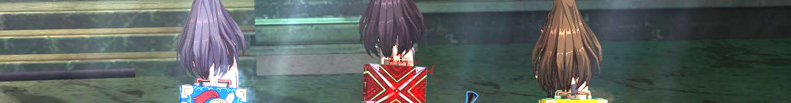

About
Cat-loving, tea-drinking, lazy bums by day.
Cat-loving, tea-drinking, dragon slayers by night!
We are a Rusty Hearts raiding guild and we do some kick-butt DMV runs. Located on the west North American server, CH3MIC4L is regarded as one of the best raiding guilds in the server. Known for our kind members and quick Valley runs, we're always open to helping out newcomers and DMV veterans alike (we all know how stingy those golems and dragon are.)
Contact Us
- nyan@ch3mic4l.com
- In-Game Mailto
- NottyNyan